Capítulo 2 Salud mental y bienestar
2.1 Salud mental y bienestar
Chile es un país que se caracteriza por una carga de trastornos mentales relativamente alta con escaso acceso a servicios de salud mental (Vicente et al, 2016). La irrupción de significativos fenómenos locales y globales, como el Estallido Social ocurrido a partir de octubre de 2019 y sus repercusiones políticas e institucionales, así como la pandemia por COVID-19 y las medidas para contenerla, con sus impactos en la salud, condiciones económicas y de sociabilidad de la población; han tenido un marcado efecto sobre la salud mental y el nivel de bienestar de la población (Wu et al, 2021; Duarte & Jiménez, 2021).
A pesar de las difíciles condiciones sanitarias y económicas, los datos ELSOC nos permiten señalar que la población chilena presenta aún un alto porcentaje de satisfacción con la vida: 83,7% responde estar satisfecho o muy satisfecho con su vida (Figura 2.1), y 63,5% responde que su vida se acerca o se acerca completamente a su ideal.
Esto es consistente con los datos de otras encuestas realizadas en contexto pre-pandémico o pandémico. Lo que muestran encuestas previas, como la Encuesta de Desarrollo Humano del 2011 (PNUD, 2012) o la encuesta Termómetro Social de octubre 2020 (DESOC-COES, 2020) es que, en general, los chilenos están satisfechos con sus vidas.
Por otra parte, y en contraste, solo un 15,8% indicó en 2021 que su salud es muy buena o excelente.
Figura 2.1: Satisfacción con la vida, ideal de vida y salud subjetiva (ola 2021)

Al analizar la evolución de estos indicadores, encontramos dos fenómenos que destacan: una fuerte caída en términos de salud subjetiva y satisfacción con la vida durante 2019; y una más fuerte y, quizás contraintuitiva, recuperación a partir de 2021.
El 2019 el porcentaje que reporta estar satisfecho o muy satisfecho con su vida cae a 70,4% (desde 79,4% el 2018), y a 55,0% entre quienes indican que su vida se acerca o se acerca completamente a su ideal (desde 62,7%). Estos fenómenos se encuentran probablemente asociados al contexto estallido social ocurrido a partir de octubre de 2019 (encuesta fue realizada a partir de noviembre de 2019).
Por otra parte, el 2021 se aprecia un marcado aumento en la satisfacción y acercamiento al ideal de vida, llegando a porcentajes superiores a niveles previos a 2019: 83,7% y 63,5%, respectivamente. Estos resultados resultan particularmente contraintuitivos, ya que existe evidencia que muestra un deterioro en la calidad de vida de la población y una percepción de mayor vulnerabilidad durante la pandemia (DESOC-COES, 2020). Sin embargo, es posible que este resultado se encuentre asociado a la mejoría en la situación sanitaria del país al momento en que fue realizada la encuesta (a partir de febrero de 2021), pero también a fenómenos de resiliencia o aumento de la solidaridad social ante situaciones adversas, como ha reportado literatura internacional durante la pandemia (Bavel et al, 2020).
Figura 2.2: Satisfacción con la vida, ideal de vida y salud subjetiva, según ola

Sintomatología depresiva
En cuanto a sintomatología depresiva, ELSOC utiliza la escala PHQ-9 (Patient Health Questionnaire), un cuestionario de autorreporte que permite establecer la presencia y severidad de los síntomas2. Si bien no es un instrumento de diagnóstico, ha demostrado una buena precisión diagnóstica (Kroenke et al, 2001; Levis et al, 2019) y ha sido validado para la población chilena (Baader et al, 2012).
Los resultados de la escala PHQ-9 son clasificados en 4 categorías, según la presencia y habitualidad de síntomas depresivos: de 0-9 se considera “Sin síntomas o con síntomas depresivos mínimos,” de 10-14 “Sintomatología depresiva media”; de 15-19 “Sintomatología depresiva moderada” y de 20-27 “Sintomatología depresiva moderada-severa o severa.”
Los resultados de 2021 muestran que, si bien un 48,6% de la población no presenta o presenta síntomas mínimos de depresión (Figura 2.3), un alto porcentaje presenta síntomas depresivos, en distintos niveles de severidad. Un 32,6% de la población presenta sintomatología depresiva media, 11,2% síntomas depresivos moderados, y 7,7% de depresión moderada-severa a severa (Figura 2.3), lo que revela una alta prevalencia de este tipo de síntomas en la población general y confirma una deteriorada situación de la salud mental en Chile.
Figura 2.3: Porcentaje que presenta síntomas de depresión (2021)
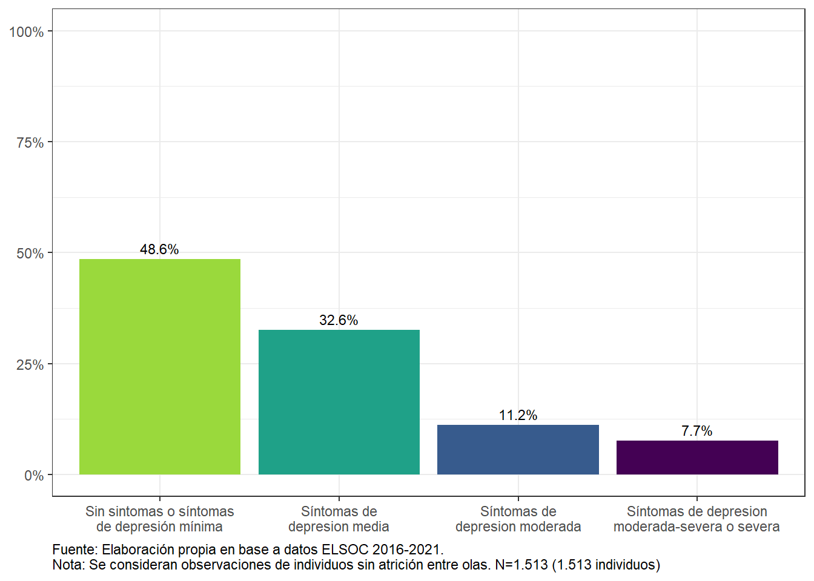Como es de esperar, la existencia de síntomas depresivos se encuentra altamente correlacionada con la satisfacción con la vida y con el porcentaje que considera que su vida se acerca a su ideal: un 93,2% de aquellos y aquellas que no presentan síntomas depresivos se encuentran satisfechos o muy satisfechos con su vida, mientras que este porcentaje se reduce a 53,8% entre aquellos que presentan sintomatología depresiva moderada-severa a severa. Ahora bien, este último resultado podría parecer paradojal, puesto que se trata de un grupo de personas que se encuentran satisfechas con sus vidas pero al mismo tiempo sufren un estado depresivo, caracterizado por intensa tristeza. Esta aparente paradoja podría explicarse a partir del modelo de “dos continuos” (Westerhof & Keyes, 2010; Kinderman et al, 2015), en el cual los trastornos mentales (como la depresión) y la salud mental y bienestar están relacionados, pero son dimensiones diferentes (un continuo indica la presencia o ausencia de salud mental y bienestar subjetivo, mientras que el otro indica la presencia o ausencia de psicopatología). Esto permite entender que personas con un mismo nivel de severidad de síntomas puedan tener diferentes niveles de adaptación psicosocial, y un impacto diferente en la calidad de vida y satisfacción con la misma.
Figura 2.4: Satisfacción con la vida, ideal de vida y salud subjetiva (ola 2021), según Sintomas de depresión

Al igual que en términos de satisfacción con la vida, la prevalencia de síntomas depresivos aumentó el año 2019, en particular la prevalencia de sintomatología depresiva media, al pasar de 33,0% a 40,9% entre 2018 y 2019. Asimismo, la relativamente alta prevalencia de síntomas depresivos moderados a severos en 2019 (25,1%) parece mostrar un efecto importante y negativo del contexto de estallido social sobre la salud mental de la población. Este resultado se encuentra en sintonía con la literatura internacional. De hecho, se estima que después de grandes protestas sociales la prevalencia de depresión aumenta en torno a 7% (Ni et al, 2020), lo cual refleja un impacto comparable a los de los desastres naturales o conflictos armados. Un estudio longitudinal realizado en Hong Kong mostró que la depresión y los síntomas de estrés postraumático aumentaron significativamente luego del estallido social ocurrido a principios de 2019 en dicho país (Ni et al, 2020).
De igual manera, el 2021 se experimenta una disminución en la prevalencia de síntomas depresivos, pasando de 34,0% el porcentaje que no presenta o que presenta síntomas mínimos de depresión en 2019, a 48,6% en 2021. Asimismo, en 2021 se observa una de las prevalencias más bajas de sintomatología depresiva moderada a severa (18,9%) durante todo el periodo.
Estos resultados sugieren que los síntomas depresivos son sensibles a las condiciones sociales, económicas y políticas, y que los cambios en la prevalencia de síntomas dependen del alcance de los efectos de la pandemia en diferentes grupos sociales.
Utilizando la misma escala para evaluar síntomas en una muestra representativa de la población nacional, la Encuesta Termómetro Social de Octubre 2020 mostró una prevalencia de 26,2% de síntomas depresivos moderados a severos (Duarte y Jiménez, en evaluación). Esto se encuentra en sintonía con la evidencia internacional, la cual sugiere que los mayores niveles de problemas de salud mental se observaron con mayor frecuencia durante los primeros meses de pandemia (Xiong et al, 2020), aumentando respecto al contexto pre pandémico (Pierce et al., 2020; Ettman et al., 2020), pero disminuyendo levemente a medida que pasaban los meses (McGinty et al., 2020; O’Connor et al, 2020; Hyland et al, 2021). La literatura emergente de COVID-19 sugiere que el bienestar psicológico debería mejorar a medida que disminuye la gravedad de la pandemia, se relajan las medidas de cuarentena y distanciamiento físico, y las personas se adaptan progresivamente a las restricciones relacionadas con la pandemia.
La menor prevalencia de síntomas depresivos moderados a severos en 2021 podría estar asociada también a las respuestas específicas ante la crisis, por ejemplo, el acceso a subsidios o retiro de los ahorros de fondos previsionales (ver siguiente sección Economía y bienestar).
Figura 2.5: Porcentaje que presenta síntomas de depresión, según ola
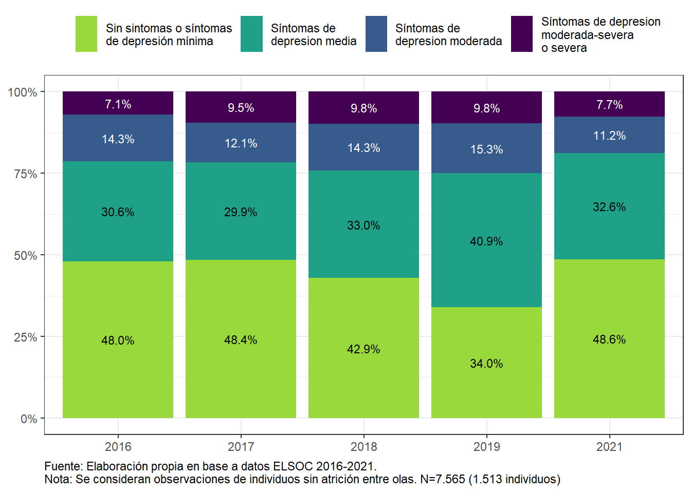Uno de los hallazgos más consistentes en epidemiología psiquiátrica es que la depresión afecta principalmente a las mujeres, con prevalencias que tienden a ser dos veces más altas que en hombres (Salk et al, 2017; Jiménez et al, 2021). Consistente con ello, ELSOC muestra una importante brecha de género en términos de prevalencia de síntomas depresivos. En 2021, 27,0% de las mujeres presentaron síntomas depresivos moderados a severos, mientras que en hombres este porcentaje fue de 9,6%. Se observa además que las mayores brechas de género en la prevalencia de síntomas depresivos se produjeron en 2019 y 2021, lo que podría sugerir que las condiciones de mayor conflictividad social durante 2019 y las condiciones de pandemia durante 2020-2021 podrían haber afectado particularmente la salud mental de las mujeres.
Es bien sabido que las mujeres están más expuestas a desventajas sociales, tienen más probabilidades que los hombres de tener contratos de trabajo informales y su vulnerabilidad podría agravarse en períodos de inestabilidad económica como el actual (United Nations, 2020; Wenham et al, 2020). Asimismo, en Chile, al igual que en otros países de América Latina, las mujeres tienden a desempeñar muchos roles simultáneamente (empleadas, dueñas de casa y cuidadoras), haciendo más probable que experimenten cargas adicionales durante la pandemia (Rojas et al, 2021).
Figura 2.6: Porcentaje que presenta síntomas de depresión moderados a severos, según sexo y ola
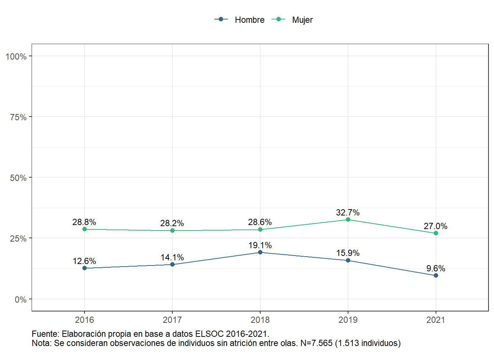Por otra parte, los datos muestran que existen brechas de género significativas en términos de estado de salud general percibido, pero no en términos de satisfacción con la vida entre los años de estudio.
Figura 2.7: Satisfacción con la vida, ideal de vida y salud subjetiva, según sexo (2021)
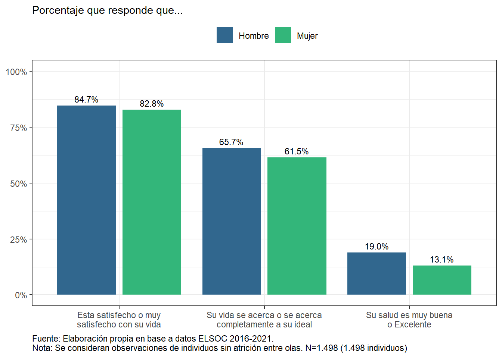Diversos estudios muestran que la depresión y los síntomas depresivos son más frecuentes entre las personas pertenecientes a grupos socioeconómicos bajos (Jiménez et al, 2021). De hecho, la última Encuesta Nacional de Salud muestra que la prevalencia de síntomas depresivos es tres veces mayor en el primer quintil que en el quinto quintil de ingresos (MINSAL, 2018).
Una de las ventajas que posee ELSOC sobre otras encuestas y estudios transversales, es que permite analizar el cambio y evolución temporal de los fenómenos de bienestar y salud mental en la población. Esto permite, por ejemplo, analizar la persistencia o recurrencia de los síntomas depresivos a lo largo del tiempo. La mayoría de las investigaciones internacionales sobre este fenómeno se han basado en muestras clínicas, que suelen ser construidas por conveniencia y son relativamente pequeñas, lo que limita la generalización de sus hallazgos. Asimismo, estos estudios han trabajado principalmente con variables clínicas, dando menos importancia a otros determinantes sociales y económicos de la salud mental. Esta es una de las ventajas comparativas de ELSOC.
Uno de los primeros resultados que se obtienen es que la presencia de síntomas depresivos oscila considerablemente a lo largo del tiempo.
Figura 2.8: Cambios en síntomas depresivos entre 2016 y 2021
Las trayectorias de los síntomas depresivos en la población general son heterogéneas, ya que la mayoría de los individuos no muestran síntomas o muestran síntomas leves, mientras que una minoría experimenta una alta carga de síntomas recurrentes o persistentes. Al considerar el período completo de análisis, observamos que 56,0% de la población en estudio no presentó síntomas moderados a severos de depresión en las 5 olas del estudio, mientras que un 2,1% presentó esta carga de síntomas en todas las olas. Éste último grupo es particularmente relevante, ya que la literatura muestra que muchos de los efectos negativos de la depresión se ven potenciados por su persistencia. La persistencia o recurrencia de los síntomas depresivos afecta negativamente a diferentes áreas de la calidad de vida relacionada con la salud (Rubio et al. 2011) y se asocia con un deterioro del funcionamiento y una carga personal y social en la vida de las personas (García-Toro et al 2013, Schramm et al 2020). Algunos estudios sugieren que el impacto económico de la depresión en la sociedad está relacionado con su duración en el tiempo más que con su severidad (Angst et al 2009, Nübe et al 2020).
Cabe destacar también que un 41,9% de la población presentó síntomas moderados a severos de depresión en al menos una de las olas del estudio, revelando una alta prevalencia de éstos en el tiempo.
Distintas dimensiones demográficas o socioeconómicas pueden aumentar indirectamente el riesgo de recurrencia o persistencia de los síntomas depresivos en el tiempo a través de su asociación con una mayor severidad de los síntomas o mayor predisposición a presentar comorbilidades de salud, entre otros factores. La literatura internacional sugiere que algunos factores sociodemográficos y económicos asociados a la recurrencia y persistencia de la depresión son el género femenino (Brunoni et al 2020, Schramm et al 2020), el bajo nivel socioeconómico (Musliner et al, 2016) y la mayor edad (Hardeveld et al 2013).
Figura 2.9: Porcentaje que presenta síntomas de depresión moderada a severa de forma reiterada, según número de ocurrencias
En este sentido, nuevamente se observa una marcada brecha de género en términos de la presencia reiterada de síntomas depresivos moderados a severos: en hombres, el porcentaje que no ha presentado síntomas moderados a severos en ninguna ola del estudio es de 68,5%; mientras que este porcentaje es de 45,2% en mujeres. De igual forma, solo 0,7% de los hombres presentaron síntomas moderados a severos en todas las olas, versus 3,4% entre las mujeres.
Figura 2.10: Porcentaje que presenta síntomas de depresión moderada a severa de forma reiterada, según número de ocurrencias y sexo
Trayectorias de síntomas depresivos
Para analizar las potenciales trayectorias en sintomatología depresiva de los sujetos del estudio se realiza un análisis de clases latentes considerando las 5 olas del estudio. El resultado obtenido nos indica la presencia de 4 “clases” o perfiles de individuos según su carga de síntomas depresivos en el tiempo.
Un 33,7% corresponde a un perfil de trayectoria con baja carga de síntomas depresivos, al presentar una muy baja probabilidad de presentar síntomas depresivos en las 5 olas; un 44,0% corresponde a un perfil de trayectoria con carga media-baja de síntomas depresivos, al tener en torno a 90% de probabilidad de no presentar síntomas, presentar síntomas mínimos o sintomatología depresiva media, oscilando entre estas categorías. Destaca el alza importante de sintomatología depresiva media en 2019 entre este grupo.
Un 12,5% se clasifica en una carga media-alta de síntomas de depresión, al presentar altas probabilidades de mostrar síntomas medios o moderados de depresión. Finalmente, un 9,8% se clasifica en la categoría de Carga alta de síntomas de depresión, al mostrar altas probabilidades de síntomas de depresión moderada-severa a severa. Este último grupo nos señala que aproximadamente un 10% de la población presenta de forma sostenida síntomas elevados de depresión.
Figura 2.11: Perfiles de sintomatología depresiva: 4 clases (2016-2021)

Al analizar cómo se distribuye la población entre las distintas trayectorias de síntomas depresivos, encontramos que en torno a un 14,4% de las mujeres, versus un 4,5% de los hombres, presenta una carga alta de síntomas depresivos a lo largo del tiempo. Esto confirma que las mujeres no sólo presentan una mayor prevalencia de síntomas depresivos, sino que además sufren una mayor persistencia y recurrencia de los síntomas a lo largo del tiempo. Dicho de otro modo, a las mujeres les cuesta más recuperarse de un episodio depresivo que a los hombres, lo cual es consistente con otros estudios (Brunoni et al, 2020; Schramm et al 2020). Es posible interpretar este hallazgo en relación con el hecho de que las mujeres están expuestas con mayor frecuencia a desventajas sociales (niveles de educación e ingresos más bajos, ocupaciones menos calificadas, desigualdades de poder y estatus) y a factores de estrés a lo largo de la vida (inseguridad económica, sobrecarga de trabajo) (Hammarström et al, 2009). Las mujeres, sobre todo aquellas que pertenecen al estrato socioeconómico bajo, tienden a tener menos control sobre áreas importantes de sus vidas en comparación con los hombres, lo que puede aumentar el riesgo de sufrir síntomas depresivos a lo largo del tiempo (Hammarström et al, 2009).
Figura 2.12: Cargas de sintomatología depresiva, según sexo
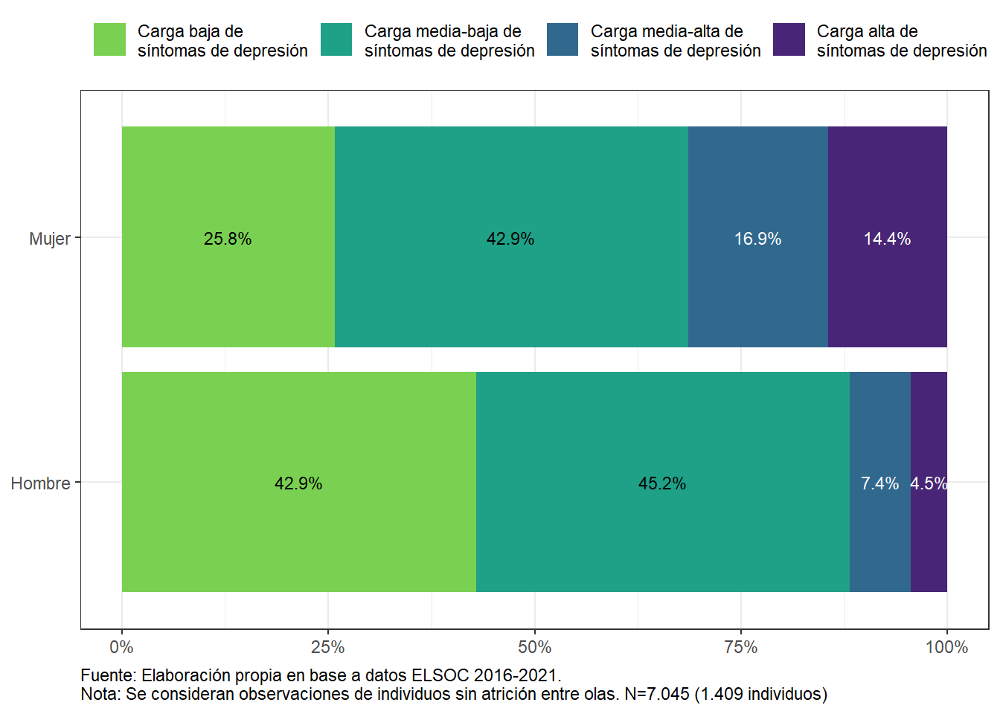Figura 2.13: Cargas de sintomatología depresiva, según tramo de edad (en 2016)

Estudios previos han mostrado que el estatus socioeconómico bajo, medido por ingresos o nivel educacional, está asociado a una mayor persistencia y recurrencia de los síntomas depresivos a lo largo del tiempo (Musliner et al 2016). De hecho, algunos estudios sugieren que las desventajas socioeconómicas parecen ser más importantes en la persistencia de los síntomas depresivos que en su desencadenamiento (Lorant et al. 2003).
Efecivamente los datos ELSOC indican que 14,2% presenta una carga alta de síntomas de depresión en el quintil 1, mientras que en el quintil de mayores ingresos (quintil 5), este porcentaje es de solo 4,6%.
Estos resultados podrían también sugerir que la persistencia de problemas de salud mental a lo largo del tiempo pueden agravar las desventajas asociadas a la posición socioeconómica, produciendo un círculo vicioso difícil de romper (Lund et al, 2018).
Figura 2.14: Cargas de sintomatología depresiva, según quintiles de ingreso (en 2021)
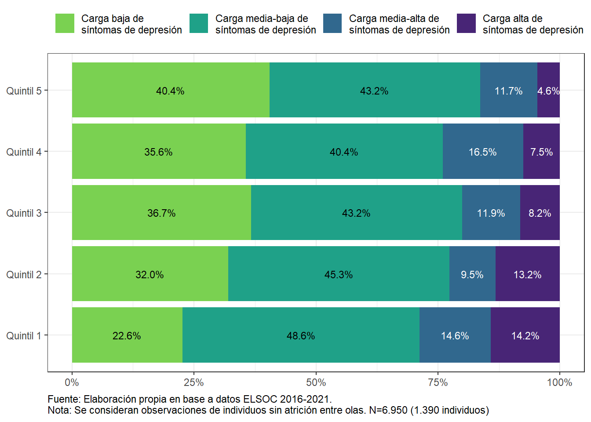2.2 Economía y bienestar
El estatus socioeconómico, generalmente medido en términos de ingresos, nivel educacional o empleo, ha demostrado ser un poderoso predictor de las condiciones de salud mental de las personas a lo largo de sus trayectorias de vida (Lund et al 2018).
La presencia de síntomas depresivos se encuentra altamente correlacionada con la situación económica de los individuos. La Figura 2.15 nos muestra cómo en 2021, a medida que aumentan los ingresos per cápita del hogar, disminuye de forma sostenida la presencia de síntomas de depresión moderados a severos: un 27,7% del Quintil 1 de ingresos muestra síntomas moderados a severos, mientras que solo un 10,2% del 5to quintil presenta estos síntomas.
Ahora bien, no es fácil estimar si los menores niveles de ingreso son la causa o el efecto de los problemas de salud mental; es decir, si los menores recursos económicos se asocian a mayores factores de estrés y, en última instancia, peor salud mental (“causalidad social”), o si más bien los problemas de salud mental preceden al lugar desfavorecido de las personas (“selección social”) (Lund et al, 2018).
Figura 2.15: Porcentaje que presenta síntomas de depresión moderados a severos, según quintiles de ingreso del hogar (2021)
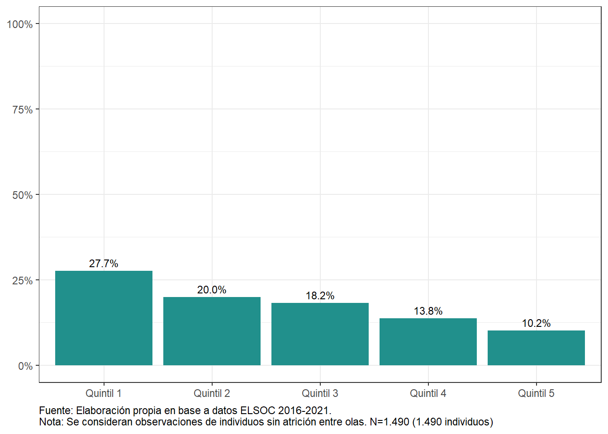De igual forma, a medida que aumenta el nivel educacional alcanzado por los encuestados, es menor la presencia de síntomas moderados a severos de depresión: 26,0% de quienes alcanzaron educación básica presentan síntomas de depresión moderada a severa, mientras que este porcentaje es de 16,0% para aquellos y aquellas con educación universitaria.
Figura 2.16: Porcentaje que presenta síntomas de depresión moderados a severos, según nivel educacional (2021)
De igual forma, la situación laboral se encuentra altamente correlacionada con la presencia de síntomas moderados a severos de depresión. El grupo con menor presencia de dichos síntomas en 2021 es el de aquellos y aquellas con trabajo remunerado (15,3%), seguido de jubilados(as) o pensionados(as) (17,8%).
Diversos estudios han mostrado que el trabajo remunerado estable es un factor protector de la salud mental, mientras que el trabajo informal, el subempleo, la desocupación o las trayectorias laborales interrumpidas constituyen un factor de riesgo (Kessler et al, 2003; Rosenthal et al, 2012).
Uno de los grupos con mayor presencia de síntomas depresivos moderados a severos es el de quienes se dedican a trabajos domésticos no remunerados (33,2%). Es importante destacar que este grupo está compuesto completamente por mujeres, representando la situación laboral de un 22,4% de las mujeres (Figura 2.17). Existe evidencia que muestra que las mujeres que realizan trabajos no remunerados (como tareas domésticas o cuidado de ancianos o niños) suelen estar sometidas a factores ambientales desfavorables, como la sobrecarga de trabajo y la desigualdad de poder y estatus, lo que podría provocar sentimientos de baja autoestima y síntomas depresivos (Hammarström et al 2009, Magaña et al 2020).
Figura 2.17: Porcentaje que presenta síntomas de depresión moderados a severos, según situación laboral y sexo (2021)
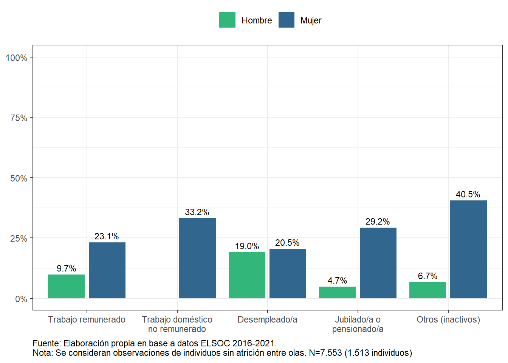Figura 2.18: Situación laboral, según sexo (2021)
La pandemia de COVID-19 generó una ruptura en la vida cotidiana y laboral de las personas. Desde mediados de marzo de 2020, el gobierno introdujo medidas de distanciamiento físico y severas restricciones de movimiento, forzando a un grupo importante de la población a trabajar de forma remota, ya sea de forma completa desde su hogar o con distintas modalidades híbridas de trabajo presencial y remoto. Los resultados de la encuesta nos señalan que un 19,2% de los trabajadores y trabajadoras remunerados trabajaba de manera completa desde el hogar al momento de ser encuestados, y un 9,4% de manera híbrida. La modalidad de trabajo presencial, sin embargo, continuó siendo la forma más habitual de trabajo, con 71,4%.
Figura 2.19: Porcentaje que trabaja en modalidad remota (2021)
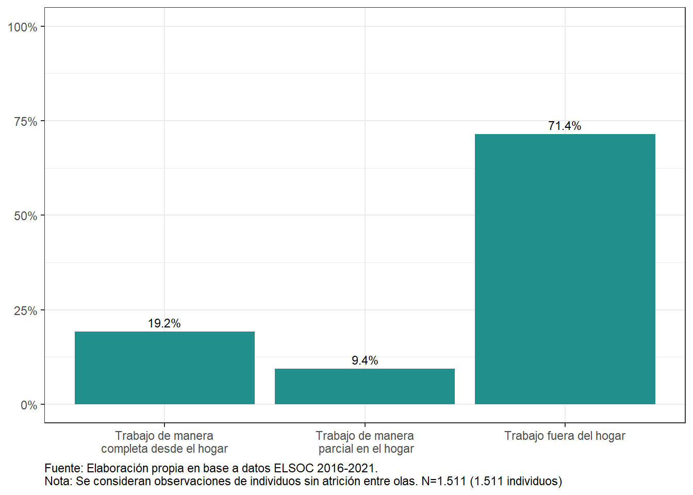En concordancia con resultados comentados previamente, el grupo de personas que no posee un trabajo remunerado presentan una mayor prevalencia de síntomas depresivos (24,6%).
Aquellos que trabajaron de forma completa desde el hogar presentaron mayor presencia de síntomas depresivos moderados a severos que quienes trabajaron de forma presencial (16,7% versus 15,5%, respectivamente), sin embargo, esta diferencia no es estadísticamente significativa. Ahora bien, quienes trabajan de manera parcial en el hogar constituyen el grupo que presenta una menor prevalencia de síntomas (11,2%). Este último resultado podría estar sugiriendo que modalidades de trabajo híbrido permiten combinar lo mejor de ambos mundos, por ejemplo, mayor autonomía en el uso del tiempo y un mejor equilibrio entre la vida familiar y laboral, reduciendo los tiempos de desplazamiento, sin perder las ventajas de la socialización presencial con pares (como el apoyo social). De este modo, podría representar una modalidad de trabajo que permite sostener condiciones favorables para la calidad de vida. Por cierto, es probable que una gran cantidad de personas que pueden desarrollar modalidades híbridas de trabajo tienen trabajos flexibles y se encuentran en las categoría de mayor nivel educacional.
Figura 2.20: Porcentaje que presenta síntomas de depresión moderados a severos, según trabajo remoto (2021)
Distintos estudios nacionales han reportado que los hogares chilenos se caracterizan por altos niveles de endeudamiento (Pérez-Roa 2020). Los resultados de la encuesta muestran que las personas que se sienten “bastante” o “muy sobrecargados” por deudas presentan consistentemente mayores niveles de síntomas depresivos moderados a severos. [Introducir valores]. Estudios previos han encontrado un efecto negativo del endeudamiento en la salud de las personas asociado a mayores niveles de ansiedad, estrés y estigmatización social (Sweet et al, 2013). Un estudio nacional mostró una mayor presencia de síntomas depresivos en personas con estados de deuda persistentes (Hojman et al, 2016).
Figura 2.21: Porcentaje que posee deudas con…, según ola
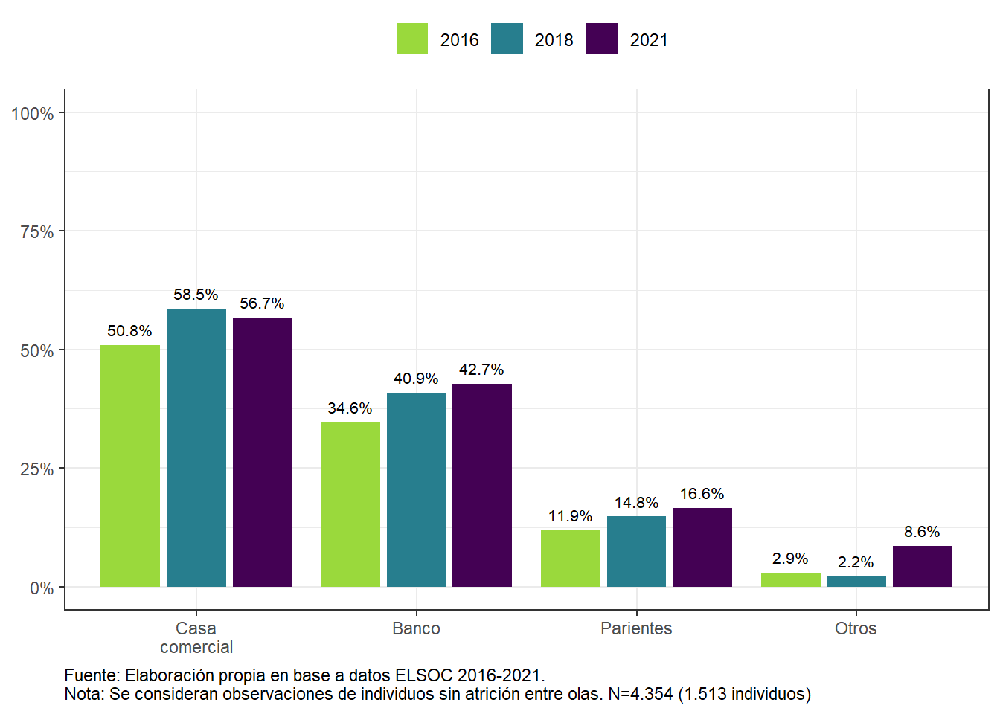Las medidas de protección financiera, el acceso a beneficios económicos y los programas de transferencia monetaria reducen la inseguridad económica y de este modo pueden contribuir a mitigar los impactos de la crisis económicas en el bienestar psicológico de la población (Stuckler & Basu, 2013; Donnelly & Farina, 2021; Wahlbeck & McDaid, 2012). En efecto, los datos ELSOC nos muestran que que la prevalencia de síntomas depresivos moderados a severos se redujo en mayor medida entre quienes hicieron uso de ambos retiros (al momento del levantamiento se habían realizado solo 2 retiros), seguido por quienes hicieron sólo un retiro y, finalmente, de quienes no hicieron uso de ninguno de estos beneficios.
Figura 2.22: Porcentaje que presenta síntomas moderados a severos de depresión, según sobrecarga de deudas

Figura 2.23: Porcentaje que presenta síntomas moderados a severos de depresión, según retiro de fondos de AFP en 2021
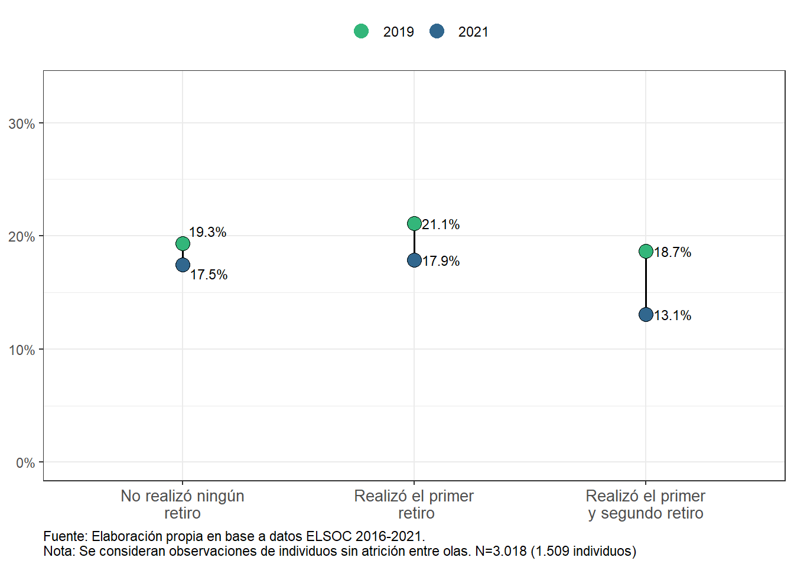2.3 COVID - 19
De acuerdo al estudio, 10,7% de la población ha sido diagnosticado con COVID-19, porcentaje superior al porcentaje oficial reportado por el Ministerio de Salud (5,1% en marzo de 2021).
Por otra parte, 69,2% reporta tener al menos un conocido o conocida que ha sido diagnosticado con COVID-19.
Figura 2.24: Porcentaje que ha sido diagnosticado y que conoce a alguien diagnosticado con COVID-19 (2021)
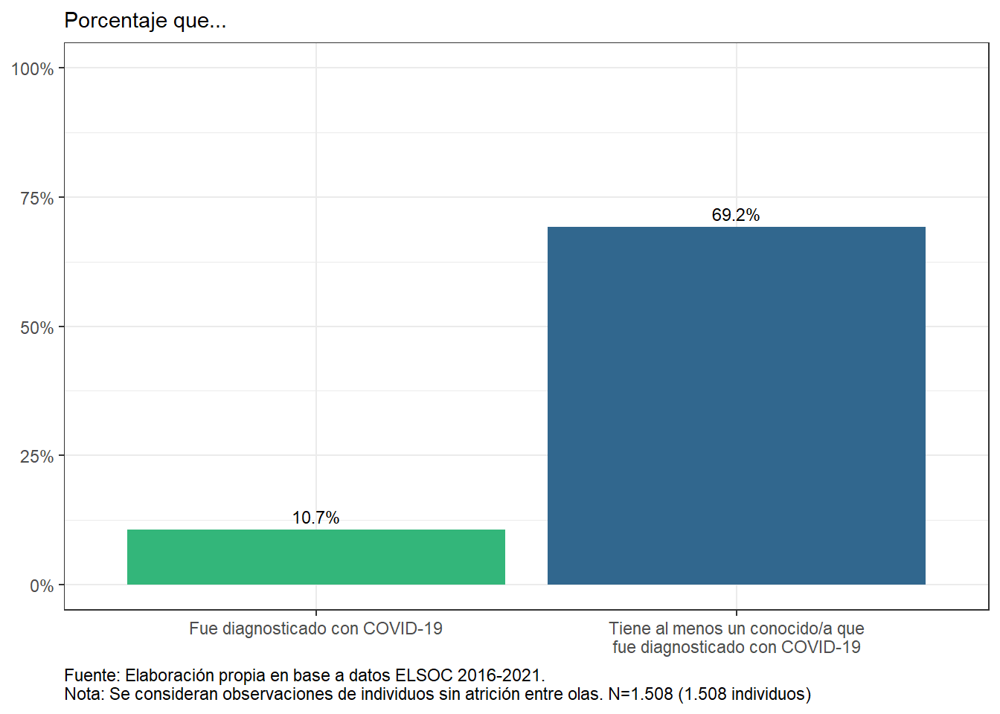La población que cuenta con nivel de educación universitaria es la que presenta un menor porcentaje de diagnósticados con COVID entre los distintos educacionales (5,4%), mientras que entre aquellos que alcanzaron educación básica, media o técnica el porcentaje diagnosticado es relativamente similar, en torno a 12%.
Figura 2.25: Porcentaje que ha sido diagnosticado y que conoce a alguien diagnosticado con COVID-19, según nivel educacional (2021)
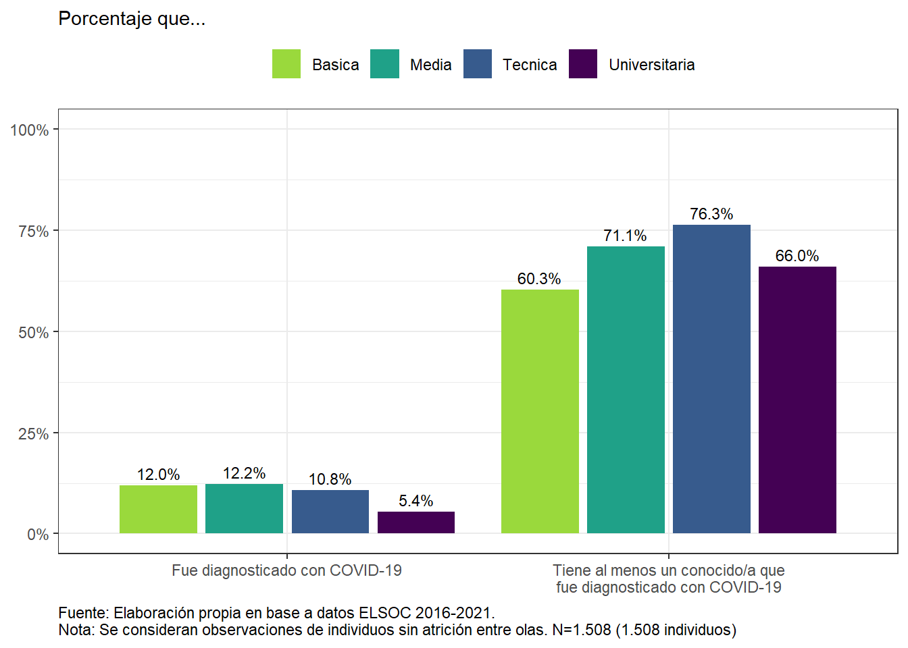Los resultados muestran que 79,2% indica estar De acuerdo o Muy de acuerdo con la frase “las cuarentenas estrictas son muy necesarias para resguardar la salud de la población,” y solo un 13,8% con “es más importante darle prioridad a la actividad económica que a la salud de la población.” Revelando que, a pesar de la larga duración de las cuarentenas implementadas en el país, y de las dificultades económicas que estas pueden haber generado, las personas señalan un alto grado de acuerdo con tomar medidas sanitarias estrictas, y de priorizarlas por sobre potenciales efectos económicos negativo.
Figura 2.26: Porcentaje De acuerdo o Muy de acuerdo con medidas sanitarias (2021)

Las personas de menor nivel educacional tienden a estar más de acuerdo con dar prioridad a la actividad económica por sobre la salud de la población (21,1% entre quienes tienen educación básica versus 8,3% entre quienes tienen educación universitaria), lo cual podría reflejar una mayor preocupación por las consecuencias de la pandemia sobre la economía personal o del hogar. Sin embargo, las personas con menor nivel educacional tienden también a estar más de acuerdo con las cuarentenas estrictas (83,3% de aquellas con educación básica) que las personas con educación superior (75,2% de aquellas con educación universitaria), lo cual podría reflejar que las personas con mayor nivel educacional valoran más sus libertades personales.
Figura 2.27: Porcentaje De acuerdo o Muy de acuerdo con medidas sanitarias, según nivel educacional (2021)
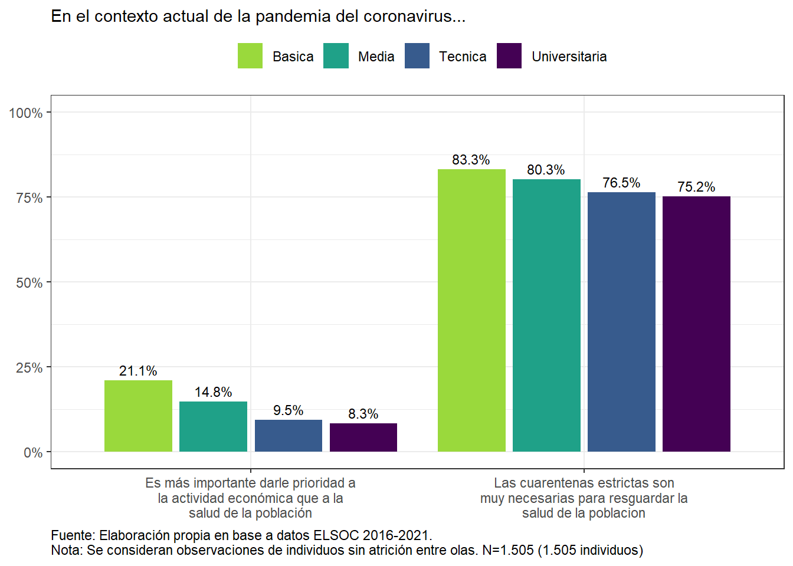Las personas reportan en general un alto apego a las medidas sanitarias: 78,7% indica seguir Frecuente o Muy Frecuentemente la recomendación de quedarse en su hogar, manteniendo el aislamiento social. Se trata de resultados similares a lo encontrado en otras encuestas nacionales durante la pandemia (Termómetro social, MOVID-19).
A pesar de que el grado de cumplimiento de las medidas sanitarias es alto para todos los niveles educacionales, las medidas de aislamiento social son seguidas en mayor medida por las personas con mayor nivel educacional. Entre quienes han alcanzado un nivel de educación universitaria, 91% declara haber respetado las medidas de aislamiento versus 76,7% entre quienes sólo han cursado educación básica
Figura 2.28: ¿En qué medida usted ha seguido la recomendación de quedarse en su hogar, manteniendo el aislamiento social? (2021).
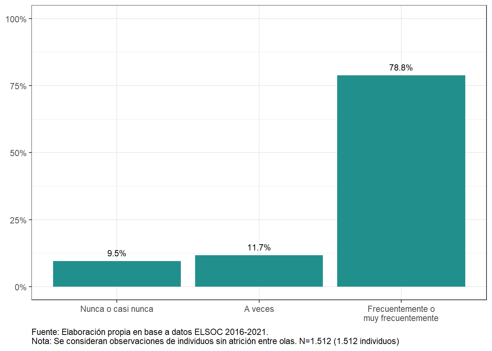Figura 2.29: Porcentaje que sigue aislamiento social Frecuente o Muy frecuentemente, según nivel educacional (2021)

Las personas que reportan un mayor cumplimiento de las medidas de aislamiento social son quienes presentan menores niveles de diagnóstico de COVID-19.
Figura 2.30: Porcentaje que ha sido diagnosticado con COVID, según cumplimiento de aislamiento social (2021)
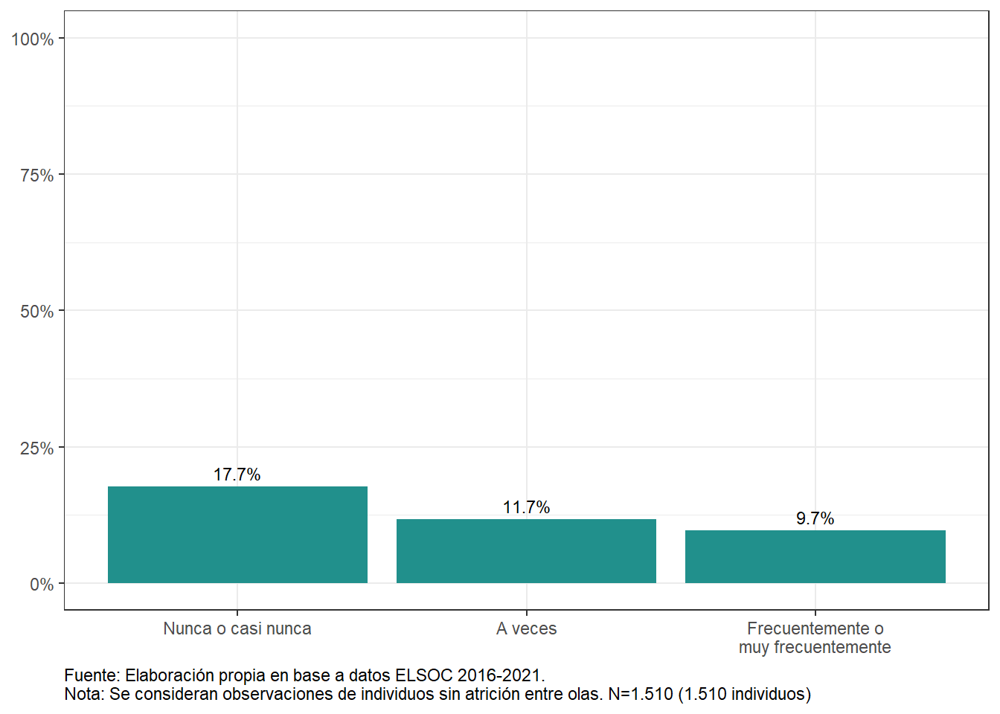Debido al contexto de pandemia, en 2021 la escala PHQ-9 no fue aplicada como un cuestionario de auto reporte↩︎